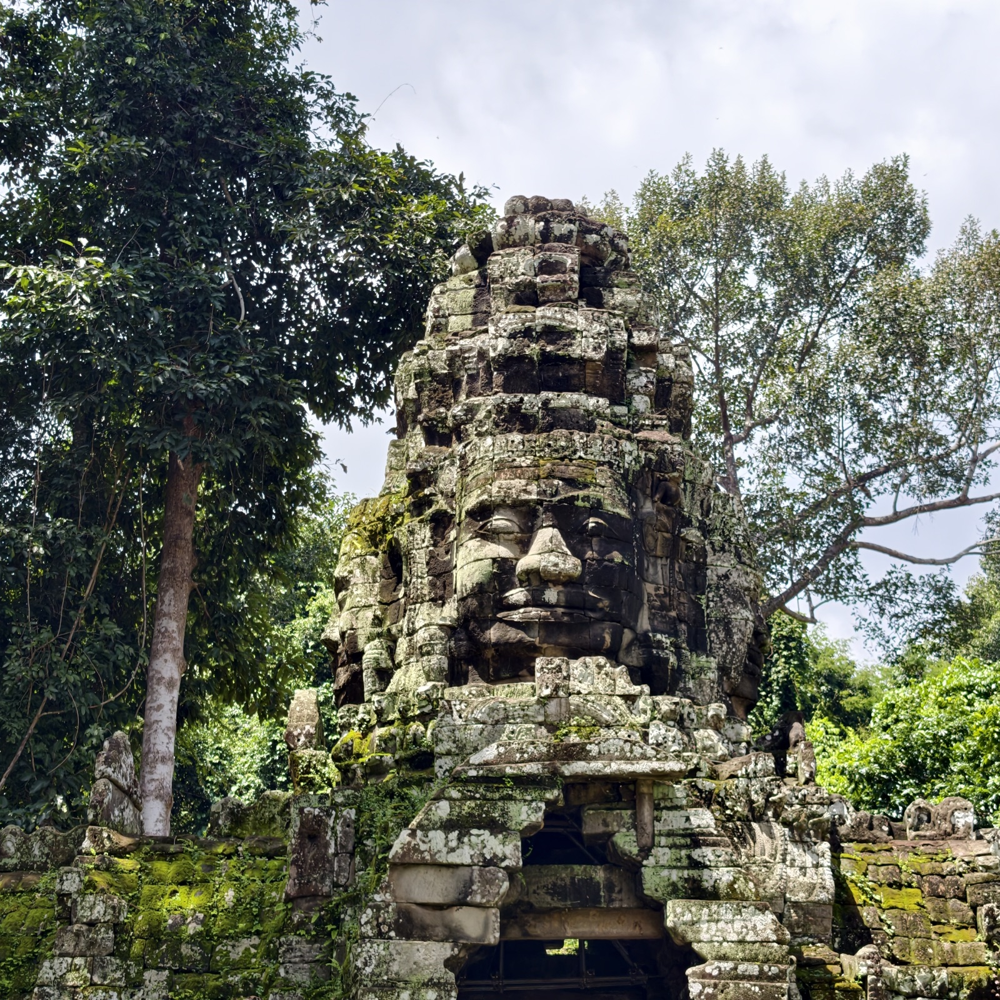
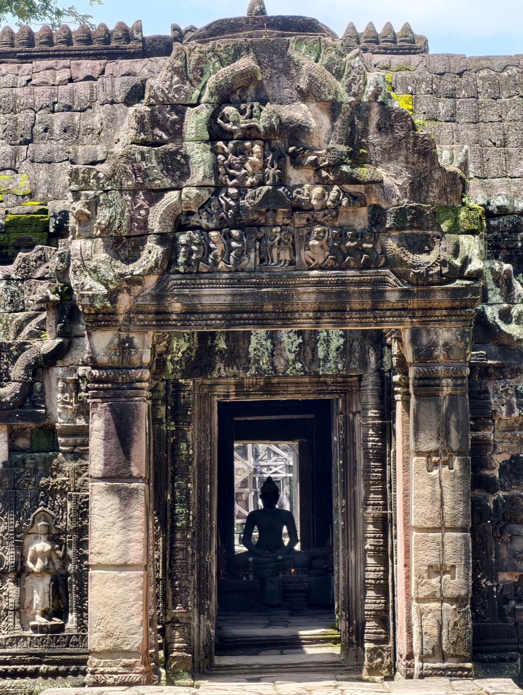
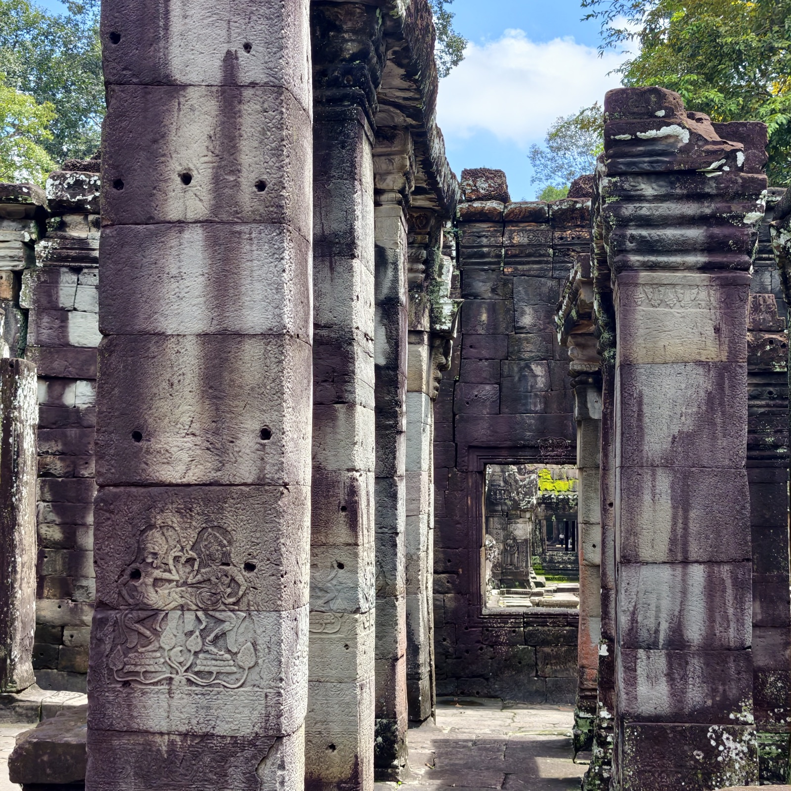
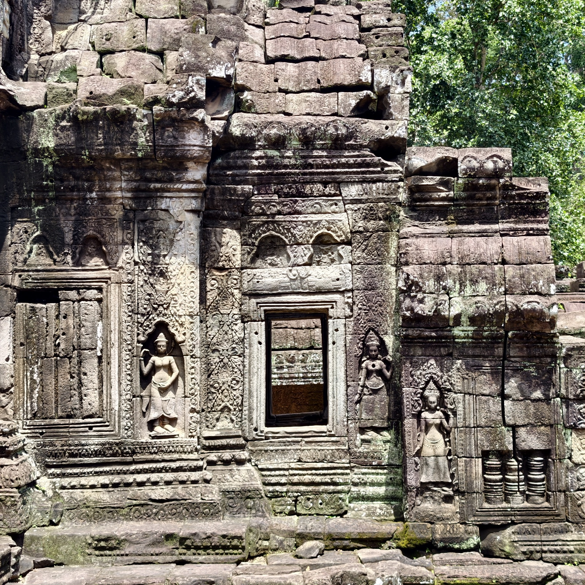
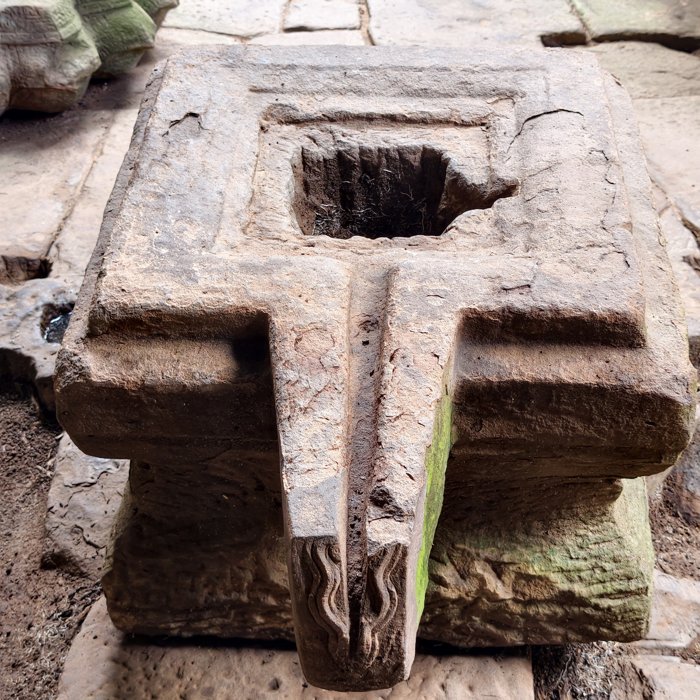
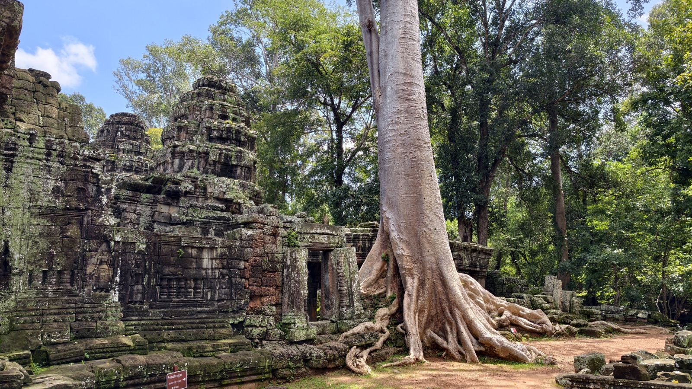
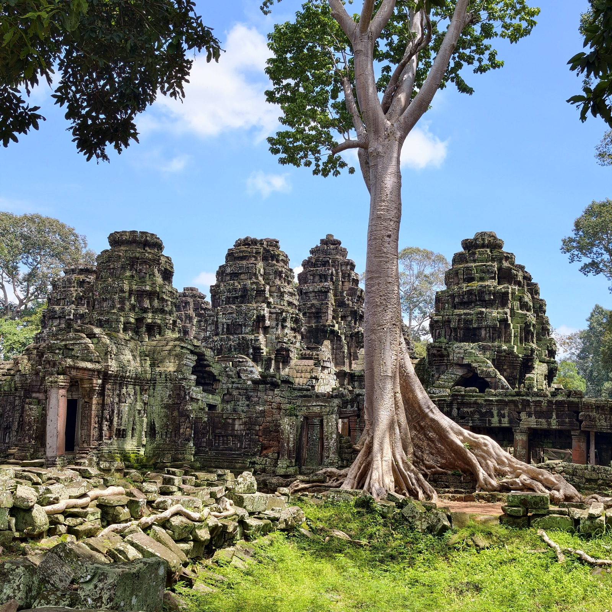

班迭哥迪寺
班迭哥迪寺在皇家浴池正对面，十二世纪末由阇耶跋摩七世所建，与塔普伦寺同一时代、同一种佛教风格，名字大意是「僧房的城堡」。不知是不是名气的关系，游人到了这里忽然变少，寺里很安静。







班迭哥迪寺在皇家浴池正对面，十二世纪末由阇耶跋摩七世所建，与塔普伦寺同一时代、同一种佛教风格，名字大意是「僧房的城堡」。不知是不是名气的关系，游人到了这里忽然变少，寺里很安静。






